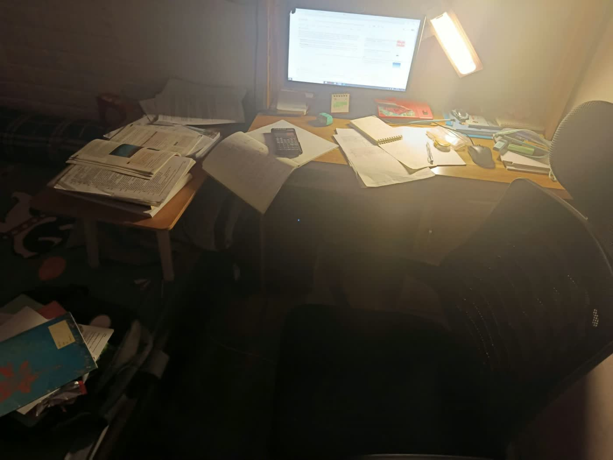
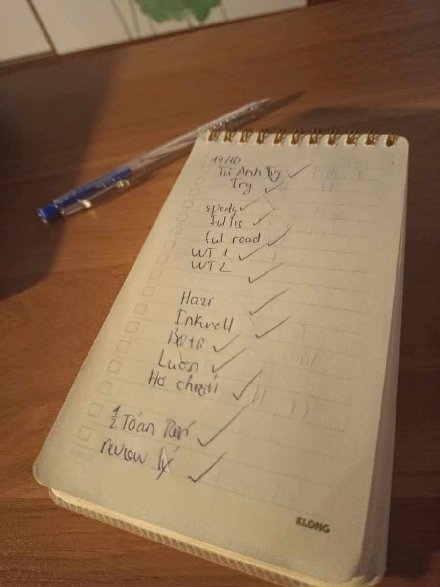
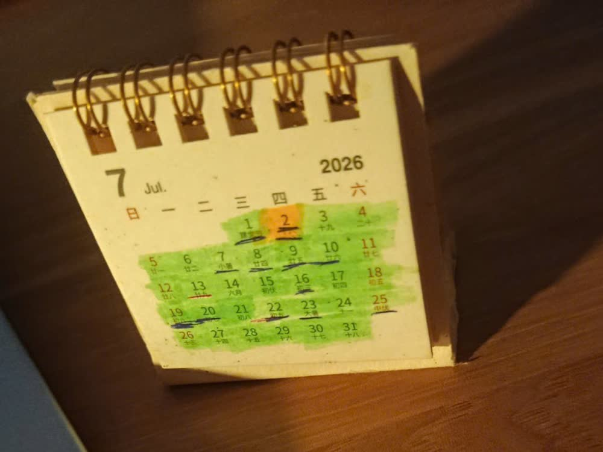

Nguyen CaoHoang
I build tools for my own bottlenecks. Next stop: engineering in Taiwan.
See the work →Slow start. Steady build.
I was an average student who learned to speak up before I learned to study.
I grow by trying, falling short and redesigning how I work. Next, I want to design production systems that waste less time, energy and material.
Software
Hardware
People
Languages
Average grades. English was my weakest subject.
Changed schools and climbed to ~9.2/10. Learned to present; won a city science fair prize.
Chased a specialised physics class from zero and fell short. Effort needs a system.
Rebuilt how I study, on my own terms. Presented or led most group projects.
++++ SYS_REC_01 // 22.12.2025LOC_HA_NOI 
Where most of the work happens01/03 Joined inter-school clubs and a robotics club. Taught myself CAD.
Shipped Haziverse and Inkwell, built the RC car. Next: engineering in Taiwan.
++++ SYS_REC_02 // 14.10.2026TASK_LOG 
A daily list, ticked by hand02/03 ++++ SYS_REC_03 // 07.2026CAL_VIEW 
Green day: the list got done03/03